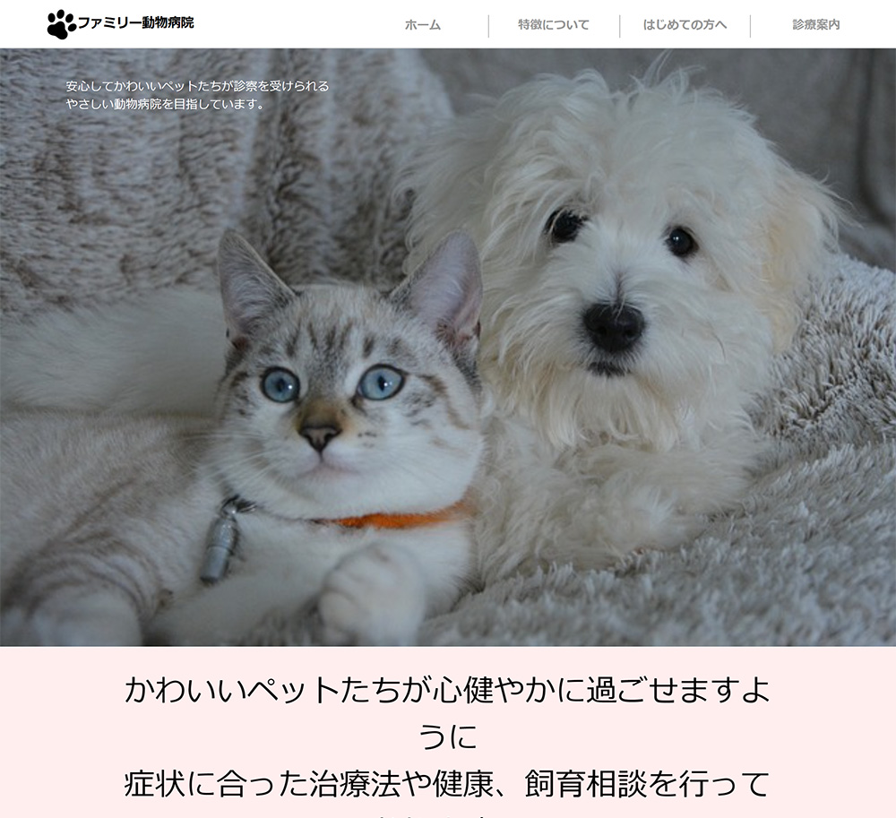

病院の中でも地域密着型で気軽に来れるようなイメージにするために可愛らしい動物の写真を複数枚使用しました。（作品について一言）
URL
https://adjustacademy.com/d2312/d231223-111201/site01
担当
デザイン・コーディング
サイトの目的
課題制作・就職活動のため
ターゲット
ペットを飼っている男女
デザインについて
親しみやすい可愛いロゴやアイコンを使用して、温かみのある可愛くて明るい雰囲気を出しました。
カラーは、全体的に淡いピンクを2色使い柔らかい雰囲気を出し、病院名と保険証については目立つようにグレーを使用しメリハリをつけました。
サイトを開いた時に目立ちやすいように、トップページ全体に大きな動物の写真を使用しました。また、文字も丸みのあるゴシック体でグレーを使用するなど可愛らしい雰囲気にしました。
コーディングについて
写真の大きさに合わせて真ん中に病院の特徴や質問、診察案内を置くことで全体的に見やすいように構成を考えました。 articleでid名を病院の特徴、質問、診察案内とつけることで、flexアイテムを使用しそれぞれをまとめて見やすくて伝わりやすくなるようにコーディングしました。